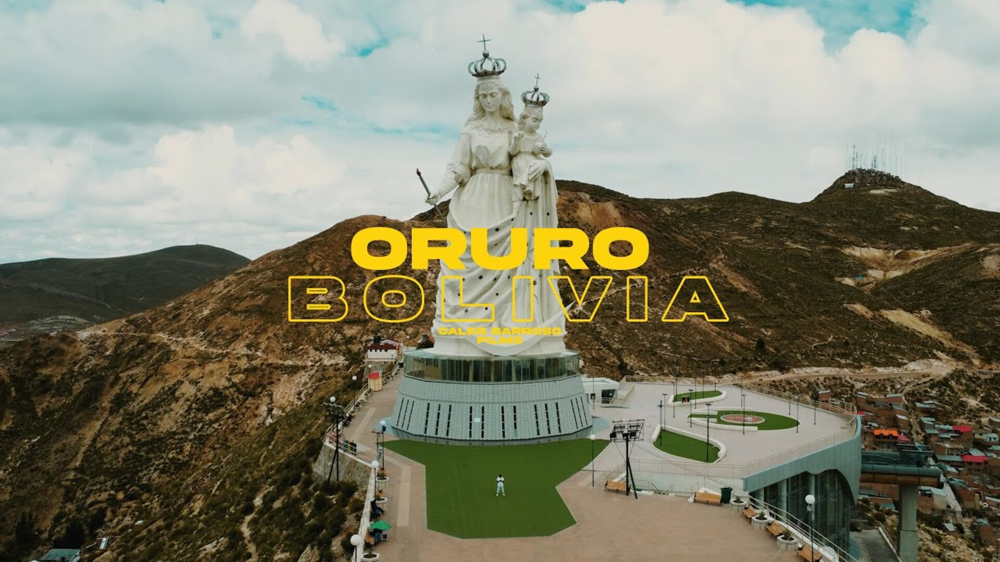
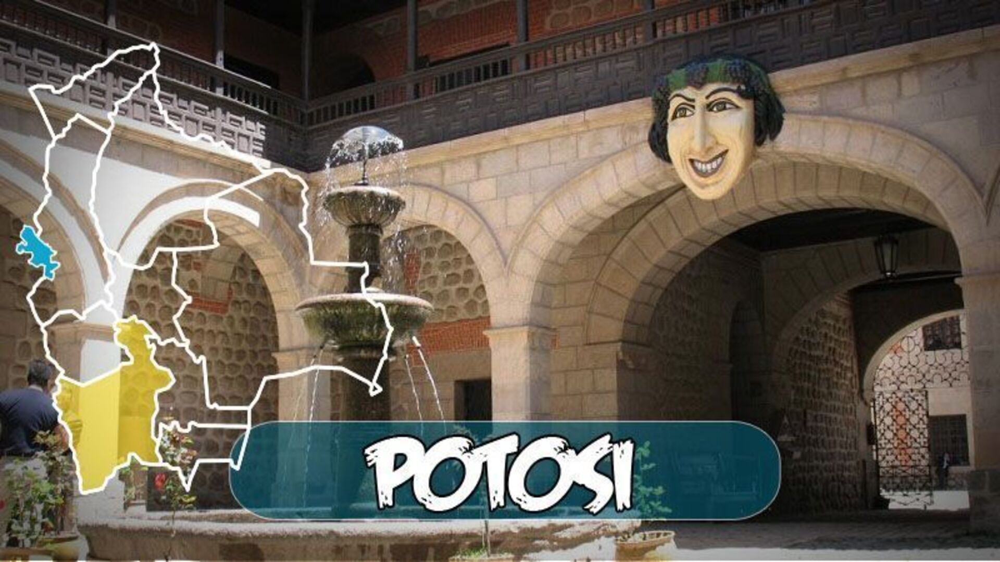
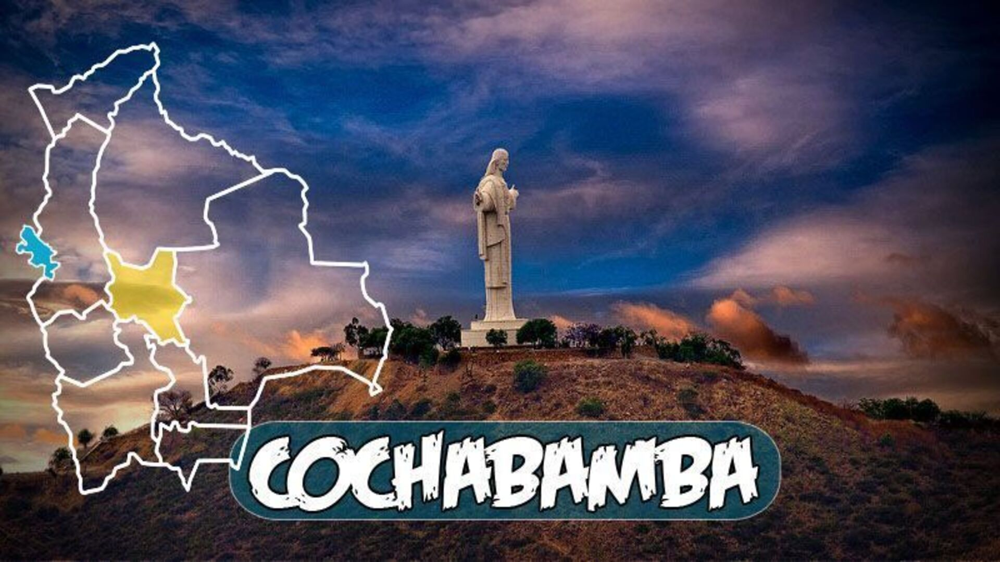
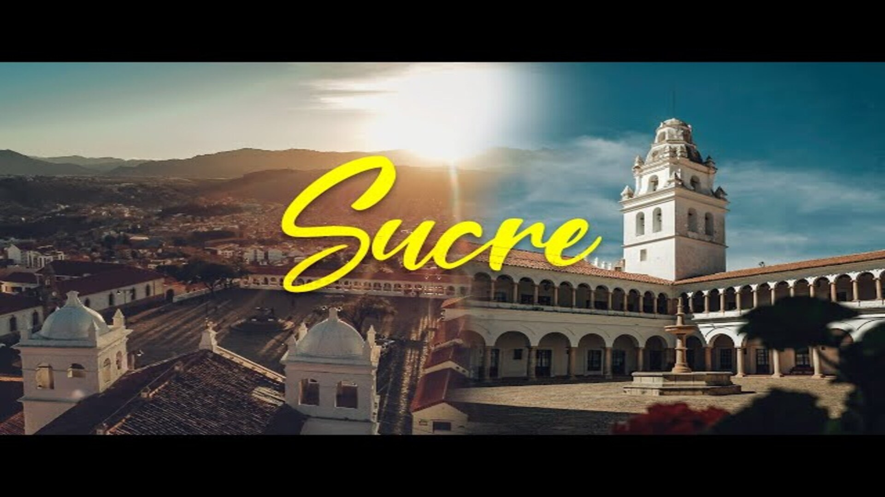
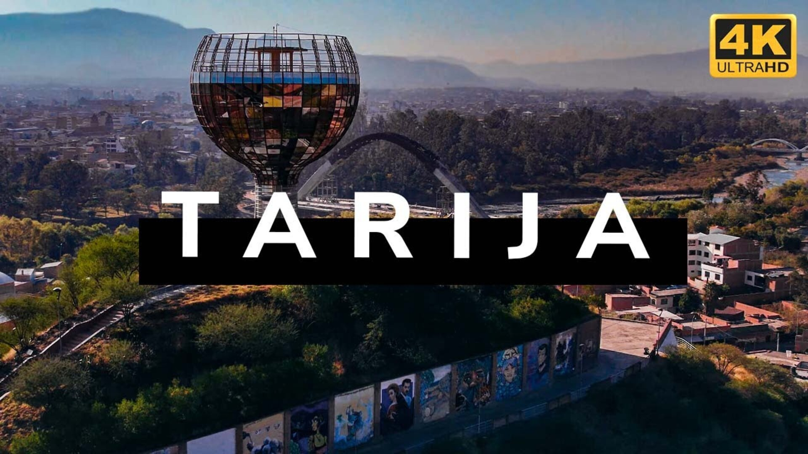
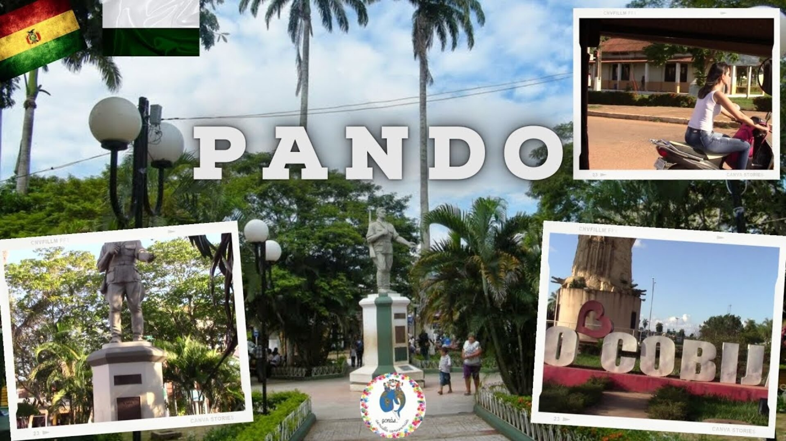
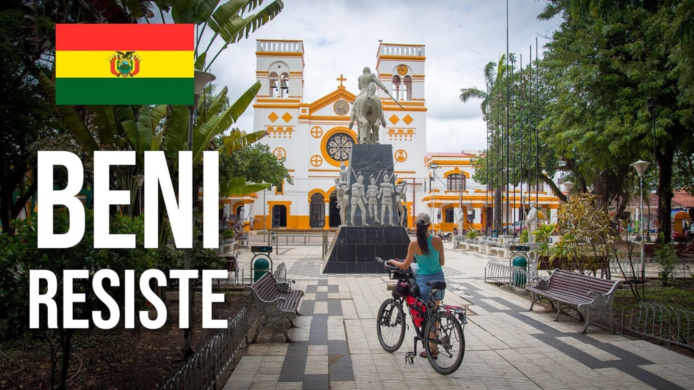
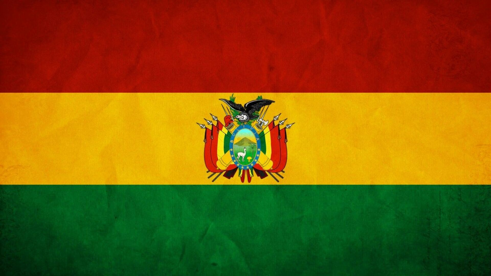

PAGINA DE BRAYAN RONALD CHAMBI TOLA









La Paz, Bolivia, es una ciudad fascinante, situada a gran altitud en el altiplano andino. Es conocida por su impresionante topografía montañosa, con barrios que se extienden por colinas y valles. A menudo, es famosa por el teleférico, que ofrece vistas panorámicas mientras transporta a los habitantes por la ciudad. La Paz también es rica en cultura, con mercados vibrantes y una mezcla única de arquitectura moderna y tradicional. La Plaza Murillo, el Mercado de las Brujas y el impresionante Valle de la Luna son solo algunos de los lugares emblemáticos que capturan su esencia única.
Oruro, Bolivia, es una ciudad famosa por su vibrante Carnaval, reconocido como Obra Maestra del Patrimonio Oral e Intangible de la Humanidad por la UNESCO. Está situada a gran altitud en el altiplano boliviano y es conocida por sus minas de estaño, plata y plomo. La ciudad tiene una rica herencia cultural y minera, con la majestuosa Virgen del Socavón dominando desde su santuario. Las calles de Oruro se llenan de vida durante las festividades, con danzas tradicionales, música y una mezcla única de creencias indígenas y católicas.
Potosí, Bolivia, es una ciudad histórica situada a gran altitud, famosa por su rica historia minera. Dominada por el Cerro Rico, una montaña que fue explotada durante siglos por sus vastas reservas de plata, Potosí jugó un papel crucial durante la colonización española y se convirtió en una de las ciudades más importantes y ricas del mundo en el siglo XVII. Sus calles están llenas de historia y cuentan con una mezcla de arquitectura colonial y características precolombinas. La Casa de la Moneda es uno de los lugares más emblemáticos, donde se acuñaron monedas con la plata extraída del Cerro Rico. Potosí es un testimonio viviente de la mezcla entre el esplendor colonial y el duro legado minero.
Cochabamba, Bolivia, es conocida como "La Ciudad de la Eterna Primavera" por su clima templado y agradable. Situada en un valle fértil, es un importante centro agrícola y comercial. La ciudad es famosa por su vibrante vida cultural y sus festivales, así como por la hospitalidad de sus habitantes. Cochabamba también alberga el Cristo de la Concordia, una de las estatuas de Jesucristo más grandes del mundo, que ofrece vistas panorámicas impresionantes de la ciudad. El mercado La Cancha es uno de los más grandes y variados de Bolivia, y es un reflejo de la rica mezcla cultural de Cochabamba.
Sucre, también conocida como Sucre, es la capital constitucional de Bolivia y un tesoro de historia y cultura. Su arquitectura colonial bien conservada le ha ganado el apodo de "La Ciudad Blanca". Sucre es el lugar donde Bolivia declaró su independencia, y alberga numerosos edificios históricos, como la Casa de la Libertad, donde se firmó el Acta de Independencia. La ciudad es también un centro universitario importante y es conocida por su clima templado y su vibrante vida cultural. La Plaza 25 de Mayo es el corazón de la ciudad, rodeada de edificios históricos y cafés encantadores.
Tarija, conocida como "la Andalucía de Bolivia," se destaca por su clima cálido y sus fértiles viñedos. Situada en el sur del país, es el corazón de la producción de vino boliviano. Las colinas de Tarija están salpicadas de bodegas donde se producen vinos y singanis de alta calidad. La ciudad tiene una atmósfera relajada y tranquila, con plazas coloniales, calles adoquinadas y una vida social vibrante. El Parque Bolívar y la Casa Dorada son algunos de los lugares más emblemáticos. Además, la región ofrece paisajes naturales impresionantes, como las cascadas de Coimata y el Cañón de Angostura.
Pando es un departamento de Bolivia ubicado en la región amazónica del país. Su capital es Cobija. Esta área es rica en biodiversidad, con selvas tropicales densas y ríos caudalosos. A diferencia de las ciudades andinas, Pando tiene un clima cálido y húmedo. La economía de Pando se basa principalmente en la explotación de la madera, la castaña (nuez de Brasil) y la agricultura. La región es menos poblada y desarrollada que otras partes de Bolivia, lo que la convierte en un lugar ideal para los amantes de la naturaleza y la aventura.
Beni es un departamento amazónico de Bolivia, y su capital es Trinidad. Es una región vasta y mayormente selvática, con numerosos ríos, pantanos y lagunas, lo que le da un paisaje único y exuberante. Beni es conocido por su rica biodiversidad y por ser hogar de muchas especies de flora y fauna. La economía del departamento se basa en la ganadería, la pesca y la agricultura. También es famoso por sus festividades religiosas y culturales, que reflejan una mezcla de tradiciones indígenas y coloniales.
Santa Cruz de la Sierra, conocida simplemente como Santa Cruz, es la ciudad más grande y de más rápido crecimiento de Bolivia. Situada en la región de los llanos orientales, Santa Cruz tiene un clima cálido y tropical. La ciudad es un importante centro económico y comercial, con una vibrante industria agrícola y un creciente sector de tecnología y servicios. Santa Cruz se distingue por su moderna infraestructura, centros comerciales y una vida nocturna activa. Además, cuenta con varios parques y áreas verdes, como el Parque Urbano y el Jardín Botánico. La Plaza 24 de Septiembre, con su catedral, es el corazón de la ciudad y un lugar de encuentro muy popular.

Bandera de Bolivia
La bandera de Bolivia denominada oficialmente como la Tricolor es uno de los símbolos nacionales de Bolivia. Fue adoptada el 31 de octubre de 1851 durante el gobierno del presidente Manuel Isidoro Belzu. Consta de tres franjas horizontales de igual anchura y dimensiones, siendo la franja superior de color rojo, la central de color amarillo y la inferior de color verde.